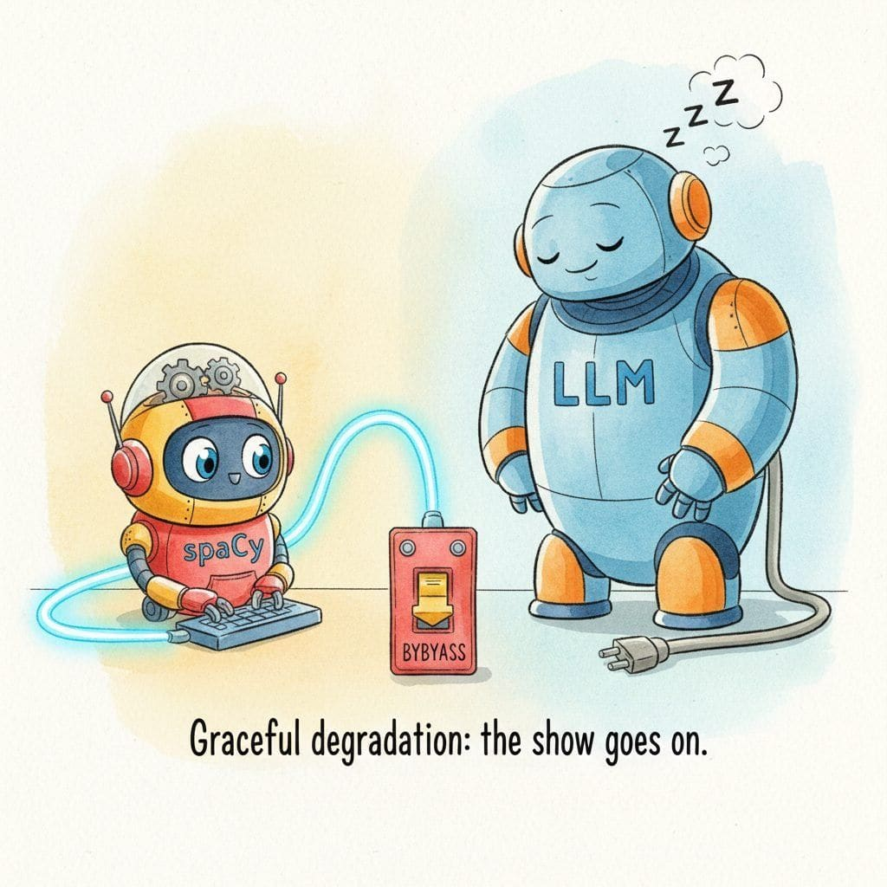
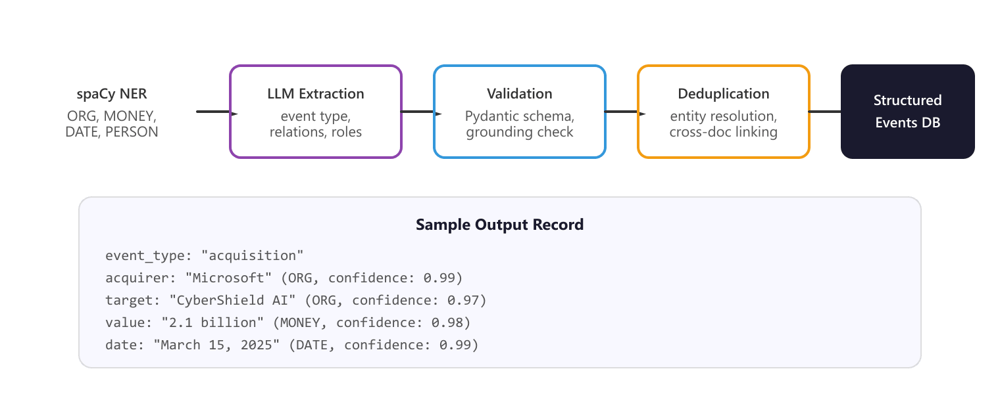

"Every LLM-extracted entity is a confident lie until proven by the source span. The grounding check is the lie detector you never skip."
Guard, Suspicious-of-Hallucinations AI Agent
Production IE systems sit at the unglamorous core of every LLM-powered RAG, agentic-search, and document-understanding product. This section codifies the deployment patterns (grounding with provenance, deduplication, graceful degradation, schema versioning) that separate a demo from a system that survives Monday morning.
Prerequisites
This section assumes the hybrid IE architectures from Section 34.3 and the production RAG patterns from Section 32.5. LLM observability fundamentals are covered in detail later in the book.
34.4.1 Production Deployment Patterns
The 0.8 similarity threshold for fuzzy entity matching is essentially folklore from the entity-resolution literature of the 1990s; it appears in dedupe.io's source code, in OpenRefine, and now in roughly every LLM-extraction grounding pipeline. No published paper definitively establishes 0.8 as optimal; it just turns out to balance false positives and false negatives well enough for most use cases that nobody has bothered to revisit it.

Deploying IE systems to production requires attention to grounding, deduplication, and graceful degradation. These patterns ensure that extraction results are reliable even when individual components fail.
34.4.1.1 Grounding Verification
Every entity extracted by an LLM should be verified against the source text. This prevents hallucinated entities from entering your structured data store.
- Exact substring check: verify that the entity text appears verbatim in the source document. Fast and simple, but misses abbreviations and paraphrases.
- Fuzzy matching: use edit distance or token overlap to handle minor variations (e.g., "Dr. Chen" vs. "Sarah Chen"). Set a threshold of 0.8 similarity.
- Semantic grounding: compute embedding similarity between the extracted entity and all noun phrases in the source. Most robust, but adds latency.
Rule. No LLM-extracted entity reaches the structured data store without passing at least one grounding check. Three-tier rubric: (1) substring tier: try exact substring match against the source first; if it passes, mark grounding="exact" and accept at full confidence. (2) fuzzy tier: if the substring check fails, run a token-overlap or edit-distance check with a 0.8 similarity threshold to handle abbreviations and minor paraphrases ("Dr. Chen" vs. "Sarah Chen"); accept with grounding="fuzzy" and downweight confidence. (3) semantic tier: if fuzzy also fails, compute embedding similarity between the extracted entity and source noun phrases; accept with grounding="semantic" only above a strict cosine threshold (typically 0.85+). Entities that fail all three tiers are logged and discarded; never silently accepted.
34.4.1.2 Graceful Degradation
When the LLM is unavailable or returns invalid output after retries, the system should fall back to classical extraction rather than failing entirely. This means your pipeline always returns at least the entities that spaCy can identify, even during LLM outages. Log all fallback events so you can measure how often they occur and what extraction quality looks like without the LLM layer.
Rule. The IE pipeline must always return at least the entities that classical NER (spaCy) can identify, even when the LLM layer is down, rate-limited, or returns invalid output after exhausting retries. Encode this as a hard invariant: classical extraction runs first and its result is captured in a variable that is returned no matter what happens downstream. The LLM layer is wrapped in a try/retry block; on failure, the system logs the fallback event (with retry count and error class), tags the result with llm_status="fallback", and returns the classical entities alone. Downstream consumers should treat llm_status as a first-class field so dashboards can monitor fallback rates and quality-during-outage separately. Never raise an unhandled exception to the caller from a production IE endpoint.
Never store LLM-extracted entities at the same confidence level as classical entities unless they pass grounding verification. Downstream consumers of your structured data need to distinguish between high-confidence, span-grounded entities and lower-confidence, LLM-inferred entities. Include the source and confidence fields in every entity record.
34.4.2 End-to-End Example: Financial Event Extraction
To illustrate a complete production pipeline, consider extracting structured financial events from news articles. This requires recognizing standard entities (companies, dates, monetary values) and domain-specific events (acquisitions, IPOs, earnings reports) with their associated attributes. Figure 34.4.2 traces the four stages of this pipeline.
The four-stage pipeline below assumes plain text in, but most production IE feeds receive PDFs, HTML, DOCX, and EML files. unstructured (from Unstructured.io) is the canonical loader that normalizes 30+ formats into a stream of typed elements (Title, NarrativeText, Table, ListItem) you can route straight into spaCy or your LLM call. Use it for the "Stage 0" ingestion step before the financial pipeline shown in Figure 34.4.2.
Show code
pip install "unstructured[pdf,docx,html]"
from unstructured.partition.auto import partition
elements = partition(filename="acquisition_announcement.pdf")
for el in elements:
if el.category == "NarrativeText":
# feed each prose block into spaCy + LLM extractor
process(el.text)partition() handles OCR for scanned PDFs, table detection, and HTML cleanup in one call; pair with chunking_strategy="by_title" for long earnings reports.
Cross-document entity resolution (deduplication) is critical for IE systems that process streams of news articles. The same company may appear as "Microsoft," "Microsoft Corp.," "MSFT," or "the Redmond-based tech giant." Use a combination of string normalization, alias dictionaries, and embedding similarity to link these mentions to a canonical entity ID.
- Grounding verification is the hallucination lie detector: three tiers (exact substring at full confidence, fuzzy at 0.8 similarity, semantic at 0.85+ cosine) catch every entity before it reaches the structured store, and unverifiable entities are logged and discarded.
- Graceful degradation is a hard invariant, not a feature: classical spaCy NER runs first and its result returns unconditionally, the LLM layer is wrapped in retry-then-fallback, and llm_status is a first-class field downstream so dashboards monitor outage-mode quality separately.
- Confidence and source fields are mandatory on every entity: downstream consumers must distinguish span-grounded classical extractions from LLM-inferred ones, so every record carries source, confidence, and grounding-tier metadata.
- The four-stage financial pipeline is the production reference: spaCy NER for ORG, MONEY, DATE, PERSON, LLM for event typing and relations, Pydantic schema validation with grounding check, cross-document entity resolution into a canonical events store.
- Unstructured-io handles the Stage-0 ingestion problem: PDFs, HTML, DOCX, and EML all normalize into typed elements (Title, NarrativeText, Table, ListItem) via partition(), with chunking_strategy="by_title" for long earnings reports.
- Cross-document entity resolution combines three signals: string normalization plus alias dictionaries plus embedding similarity link "Microsoft," "Microsoft Corp.," "MSFT," and "the Redmond-based tech giant" to a single canonical entity ID.
What's Next?
In the next section, Section 34.5: Coreference Resolution and Document Pipelines, we build on the material covered here.